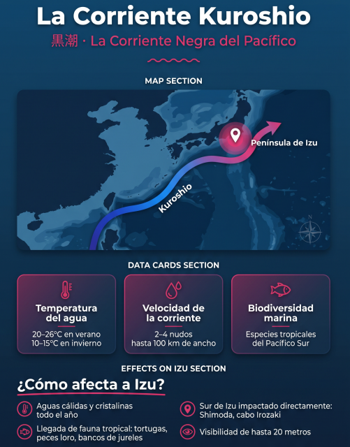

Izu es uno de los puntos de buceo favoritos de los japoneses. Y no sólo porque se encuentre a solo 2 horas de Tokio, sino porque gracias a la corriente Kuroshio, esta península volcánica se convierte
en un paraíso de diversidad y vida marina.
Esta "corriente negra" transforma los fondos marinos de la península de Izu en un paraíso submarino
lleno de vida y colores. En este artículo, te explicamos cómo la Kuroshio
enriquece el buceo en Izu y por qué deberías vivir esta experiencia con nosotros en www.buceojapon.com.
La Kuroshio fluye desde las cálidas aguas del sur, trayendo nutrientes y especies tropicales que se
mezclan con las aguas templadas locales. Esto crea un ecosistema diverso donde puedes encontrar corales resistentes,
peces pelágicos y una biodiversidad que te dejará sin aliento. Olvídate de Okinawa o las islas del sur; Izu ofrece esta magia a tu alcance desde Tokio.

La Kuroshio: La Corriente que Esculpe Izu
La corriente Kuroshio, también conocida como la "corriente negra", es una de las corrientes
oceánicas más poderosas del mundo. Fluye desde Filipinas bordeando las costas de Japón, y en Izu,
su influencia es clave para la vida marina. Transporta calor, nutrientes y una biodiversidad
extraordinaria, creando arrecifes de coral en latitudes inesperadas y mezclando aguas templadas
con aguas cálidas.
En Izu, la Kuroshio genera una alta productividad biológica, trayendo desde el fondo nutrientes que
alimentan una cadena trófica vibrante. Esto resulta en paisajes volcánicos cubiertos de coral blando,
paredes rocosas y la posibilidad de avistar grandes pelágicos como atunes y tiburones cornudos.
Donde Fluye la Kuroshio en Izu, Florece la Vida
Gracias a la Kuroshio, Izu cuenta con una mezcla única de especies. Aquí encuentras corales resistentes
como Acropora hyacinthus, capaces de crecer incluso en aguas más frías. Peces tropicales como pargos,
peces loro y sardinas conviven con especies locales, creando un ecosistema rico y variado.
No te pierdas tiburones y tortugas marinas, incluyendo la tortuga verde y laúd. Los calamares voladores japoneses
(Todarodes pacificus) también son protagonistas, viajando en esta autopista marina. En Izu,
especies como el pez globo con boca afilada o el tiburón cornudo te esperan en cada inmersión.
Arrecifes Coralinos en Izu: Un Milagro Submarino
La Kuroshio permite que Izu tenga arrecifes de coral septentrionales únicos. Desde Atami hasta Osezaki,
formaciones de Dendronephthya, Escleractinios o Melithaea crean estructuras fascinantes y llenas de color.
Sin embargo, estos arrecifes enfrentan amenazas como el calentamiento global y la acidificación oceánica,
por lo que bucear aquí es una oportunidad para apreciar y proteger esta belleza.
En puntos como IOP (Izu Oceanic Park), Kawana, Atami y Osezaki, puedes explorar estos arrecifes con
guías en español, asegurando una experiencia segura y memorable.
Bucea en los Dominios de la Kuroshio con BuceoJapón
En buceojapon te llevamos a los mejores puntos de Izu influenciados por la Kuroshio.
Desde IOP, el primer centro de buceo de Japón, hasta Kawana, Atami y Osezaki,
cada inmersión es una aventura guiada en español. Vive la biodiversidad única de Izu, con briefings claros y
atención personalizada.
¿Quieres bucear donde la Kuroshio cobra vida? Reserva tu experiencia con nosotros y descubre el
lado salvaje de Japón bajo el agua.
¿Listo para sumergirte en la Kuroshio?